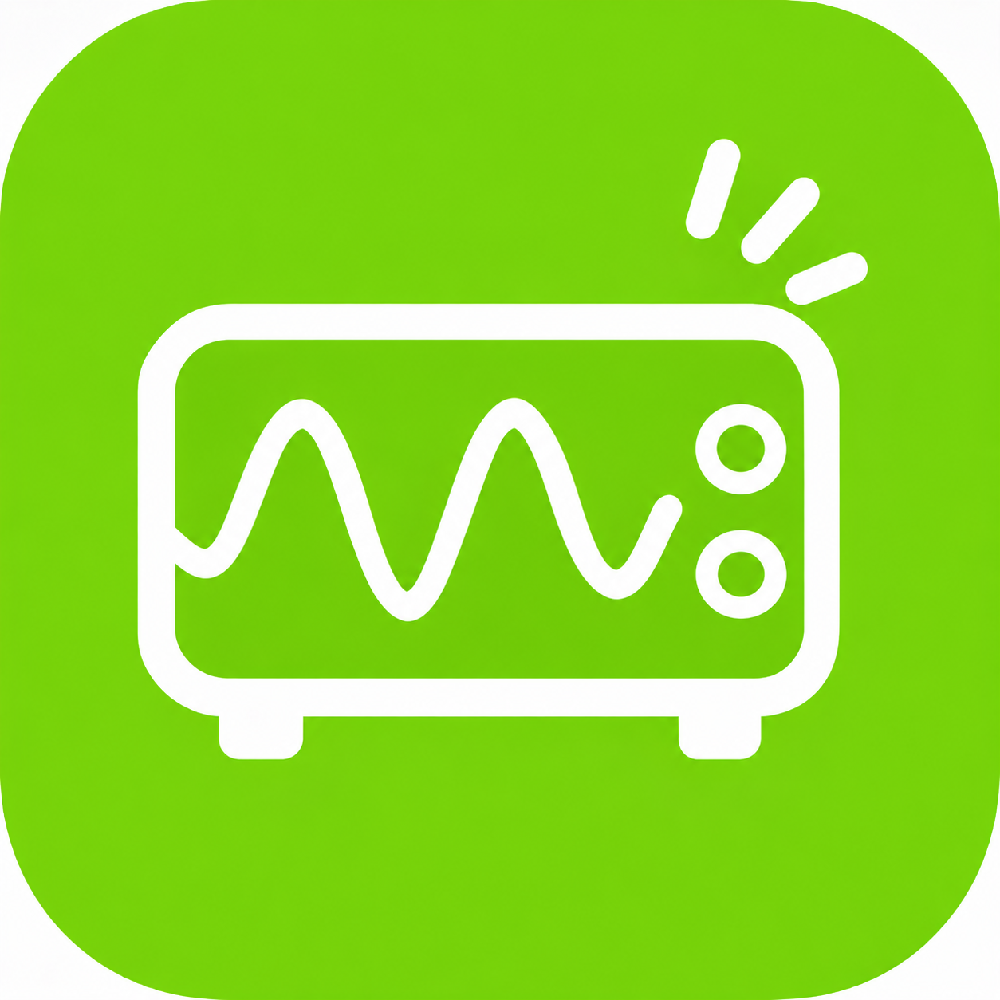
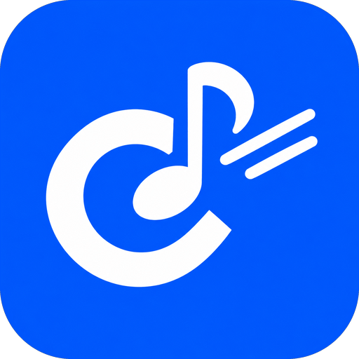

// Tools & Software
Apps
Quiet Siganalが提供するアプリです。
「まなびオシロ」はWindows用のZIPファイルをダウンロードし解凍して使います。「コード譜クイック工房」はブラウザで開くだけですぐ使えます。

まなびオシロ
01
音を入力して、音の高さや大きさによる波形の違いを目で見て学べるオシロスコープ。表示時間のレンジも、観察しやすい時間に変更できます。信号発生では、周波数を指定して正弦波・三角波・矩形波を出力可能。PCのマイクにも、オーディオインターフェイスにも対応しています。
↓ ここをクリックするとダウンロードを開始します
対応:Windows(ZIPファイル)
使い方:ダウンロード後にZIPを解凍し、中のEXEファイルを起動
使い方:ダウンロード後にZIPを解凍し、中のEXEファイルを起動
Download for Windows ↓

コード譜クイック工房
02
コード譜をクイックに作れるツール。メジャー、マイナー、セブンスはもちろん、基本的なコードネームにすべて対応。繰り返し記号、セクション、小節数の変更、A4用紙に入る段数の変更、×数字、1小節を4分割まで入力できます。部分的な小節数の変更も可能。印刷とPDF出力に対応しています。
対応:ブラウザ(ダウンロード・インストール不要)
使い方:このカードを押すと、そのまま開きます
使い方:このカードを押すと、そのまま開きます
Open in Browser →